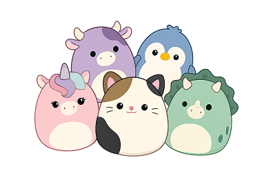

1980-OGGI - ERA DEI FENOMENI GLOBALI
SQUISHMALLOWS
Lanciati nel 2017 dalla Kellytoy, gli Squishmallows sono passati in pochissimo tempo dall'essere semplici peluche a diventare un vero e proprio fenomeno culturale globale. Con la loro forma a uovo e una consistenza che ricorda un marshmallow, hanno ridefinito il concetto di "oggetto di conforto" nell'era dei social media.
UN'ESPERIENZA TATTILE UNICA
Il segreto del loro successo non sta solo nel design, ma nei materiali:
- Il "Super Soft": Realizzati con una fibra di poliestere ultra-morbida e un tessuto esterno elasticizzato, sono progettati per essere schiacciati e tornare sempre alla loro forma originale.
- Design Minimalista:Occhi semplici, colori pastello e forme arrotondate che trasmettono immediatamente un senso di calma e sicurezza (il cosiddetto stile kawaii).



PIÙ CHE UN PELUCHE
Ogni Squishmallow non è solo un pupazzo, ma un individuo con un nome e una storia.
- La Biografia:Sull'etichetta di ogni personaggio (che sia l'iconico gatto Cam, l'assiolo Archie o la mucca Connor) è scritta una breve biografia che ne descrive hobby, sogni e carattere. Questo crea un legame empatico immediato con chi lo acquista.
- La Caccia al Tesoro:Esistono migliaia di varianti e "squadre" diverse. La rarità di alcuni modelli ha scatenato una frenesia collezionistica senza precedenti, con fan che viaggiano per chilometri per scovare i pezzi più difficili da trovare.

IL FENOMENO SOCIAL (INSTAGRAM E TIKTOK)
Gli Squishmallows sono i primi giocattoli ad essere diventati virali grazie a TikTok (sotto l'hashtag #SquishTok). Durante i periodi di isolamento degli ultimi anni, sono diventati un supporto emotivo fondamentale per milioni di persone, offrendo un rifugio morbido e rassicurante in un mondo sempre più digitale e frenetico.